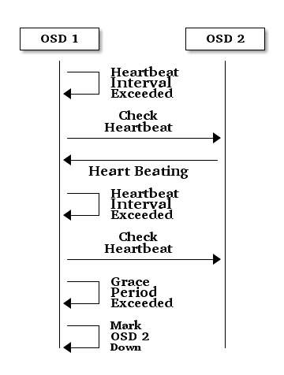
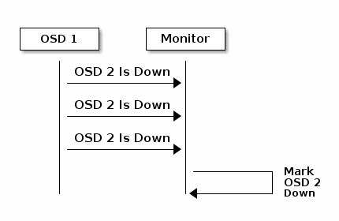

Configuring Monitor/OSD Interaction¶
After you have completed your initial Ceph configuration, you may deploy and run Ceph. When you execute a command such as ceph health or ceph -s, the Ceph Monitor reports on the current state of the Ceph Storage Cluster. The Ceph Monitor knows about the Ceph Storage Cluster by requiring reports from each Ceph OSD Daemon, and by receiving reports from Ceph OSD Daemons about the status of their neighboring Ceph OSD Daemons. If the Ceph Monitor doesn’t receive reports, or if it receives reports of changes in the Ceph Storage Cluster, the Ceph Monitor updates the status of the Ceph Cluster Map.
Ceph provides reasonable default settings for Ceph Monitor/Ceph OSD Daemon interaction. However, you may override the defaults. The following sections describe how Ceph Monitors and Ceph OSD Daemons interact for the purposes of monitoring the Ceph Storage Cluster.
OSDs Check Heartbeats¶
Each Ceph OSD Daemon checks the heartbeat of other Ceph OSD Daemons every 6 seconds. You can change the heartbeat interval by adding an osd heartbeat interval setting under the [osd] section of your Ceph configuration file, or by setting the value at runtime. If a neighboring Ceph OSD Daemon doesn’t show a heartbeat within a 20 second grace period, the Ceph OSD Daemon may consider the neighboring Ceph OSD Daemon down and report it back to a Ceph Monitor, which will update the Ceph Cluster Map. You may change this grace period by adding an osd heartbeat grace setting under the [osd] section of your Ceph configuration file, or by setting the value at runtime.

OSDs Report Down OSDs¶
By default, a Ceph OSD Daemon must report to the Ceph Monitors that another Ceph OSD Daemon is down three times before the Ceph Monitors acknowledge that the reported Ceph OSD Daemon is down. You can change the minimum number of osd down reports by adding an mon osd min down reports setting (osd min down reports prior to v0.62) under the [mon] section of your Ceph configuration file, or by setting the value at runtime. By default, only one Ceph OSD Daemon is required to report another Ceph OSD Daemon down. You can change the number of Ceph OSD Daemones required to report a Ceph OSD Daemon down to a Ceph Monitor by adding an mon osd min down reporters setting (osd min down reporters prior to v0.62) under the [mon] section of your Ceph configuration file, or by setting the value at runtime.

OSDs Report Peering Failure¶
If a Ceph OSD Daemon cannot peer with any of the Ceph OSD Daemons defined in its Ceph configuration file (or the cluster map), it will ping a Ceph Monitor for the most recent copy of the cluster map every 30 seconds. You can change the Ceph Monitor heartbeat interval by adding an osd mon heartbeat interval setting under the [osd] section of your Ceph configuration file, or by setting the value at runtime.

OSDs Report Their Status¶
If an Ceph OSD Daemon doesn’t report to a Ceph Monitor, the Ceph Monitor will consider the Ceph OSD Daemon down after the mon osd report timeout elapses. A Ceph OSD Daemon sends a report to a Ceph Monitor when a reportable event such as a failure, a change in placement group stats, a change in up_thru or when it boots within 5 seconds. You can change the Ceph OSD Daemon minimum report interval by adding an osd mon report interval min setting under the [osd] section of your Ceph configuration file, or by setting the value at runtime. A Ceph OSD Daemon sends a report to a Ceph Monitor every 120 seconds irrespective of whether any notable changes occur. You can change the Ceph Monitor report interval by adding an osd mon report interval max setting under the [osd] section of your Ceph configuration file, or by setting the value at runtime.

Configuration Settings¶
When modifying heartbeat settings, you should include them in the [global] section of your configuration file.
Monitor Settings¶
mon osd min up ratio
| Description: | The minimum ratio of up Ceph OSD Daemons before Ceph will mark Ceph OSD Daemons down. |
|---|---|
| Type: | Double |
| Default: | .3 |
mon osd min in ratio
| Description: | The minimum ratio of in Ceph OSD Daemons before Ceph will mark Ceph OSD Daemons out. |
|---|---|
| Type: | Double |
| Default: | .3 |
mon osd laggy halflife
| Description: | The number of seconds laggy estimates will decay. |
|---|---|
| Type: | Integer |
| Default: | 60*60 |
mon osd laggy weight
| Description: | The weight for new samples in laggy estimation decay. |
|---|---|
| Type: | Double |
| Default: | 0.3 |
mon osd adjust heartbeat grace
| Description: | If set to true, Ceph will scale based on laggy estimations. |
|---|---|
| Type: | Boolean |
| Default: | true |
mon osd adjust down out interval
| Description: | If set to true, Ceph will scaled based on laggy estimations. |
|---|---|
| Type: | Boolean |
| Default: | true |
mon osd auto mark in
| Description: | Ceph will mark any booting Ceph OSD Daemons as in the Ceph Storage Cluster. |
|---|---|
| Type: | Boolean |
| Default: | false |
mon osd auto mark auto out in
| Description: | Ceph will mark booting Ceph OSD Daemons auto marked out of the Ceph Storage Cluster as in the cluster. |
|---|---|
| Type: | Boolean |
| Default: | true |
mon osd auto mark new in
| Description: | Ceph will mark booting new Ceph OSD Daemons as in the Ceph Storage Cluster. |
|---|---|
| Type: | Boolean |
| Default: | true |
mon osd down out interval
| Description: | The number of seconds Ceph waits before marking a Ceph OSD Daemon down and out if it doesn’t respond. |
|---|---|
| Type: | 32-bit Integer |
| Default: | 300 |
mon osd downout subtree limit
| Description: | The largest CRUSH unit type that Ceph will automatically mark out. |
|---|---|
| Type: | String |
| Default: | rack |
mon osd report timeout
| Description: | The grace period in seconds before declaring unresponsive Ceph OSD Daemons down. |
|---|---|
| Type: | 32-bit Integer |
| Default: | 900 |
mon osd min down reporters
| Description: | The minimum number of Ceph OSD Daemons required to report a down Ceph OSD Daemon. |
|---|---|
| Type: | 32-bit Integer |
| Default: | 1 |
mon osd min down reports
| Description: | The minimum number of times a Ceph OSD Daemon must report that another Ceph OSD Daemon is down. |
|---|---|
| Type: | 32-bit Integer |
| Default: | 3 |
OSD Settings¶
osd heartbeat address
| Description: | An Ceph OSD Daemon’s network address for heartbeats. |
|---|---|
| Type: | Address |
| Default: | The host address. |
osd heartbeat interval
| Description: | How often an Ceph OSD Daemon pings its peers (in seconds). |
|---|---|
| Type: | 32-bit Integer |
| Default: | 6 |
osd heartbeat grace
| Description: | The elapsed time when a Ceph OSD Daemon hasn’t shown a heartbeat that the Ceph Storage Cluster considers it down. |
|---|---|
| Type: | 32-bit Integer |
| Default: | 20 |
osd mon heartbeat interval
| Description: | How often the Ceph OSD Daemon pings a Ceph Monitor if it has no Ceph OSD Daemon peers. |
|---|---|
| Type: | 32-bit Integer |
| Default: | 30 |
osd mon report interval max
| Description: | The maximum time in seconds that a Ceph OSD Daemon can wait before it must report to a Ceph Monitor. |
|---|---|
| Type: | 32-bit Integer |
| Default: | 120 |
osd mon report interval min
| Description: | The minimum number of seconds a Ceph OSD Daemon may wait from startup or another reportable event before reporting to a Ceph Monitor. |
|---|---|
| Type: | 32-bit Integer |
| Default: | 5 |
| Valid Range: | Should be less than osd mon report interval max |
osd mon ack timeout
| Description: | The number of seconds to wait for a Ceph Monitor to acknowledge a request for statistics. |
|---|---|
| Type: | 32-bit Integer |
| Default: | 30 |